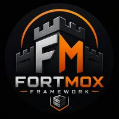

Inspect & validate
Typed system configuration, VM dependency ordering, Linux hardware reporting, and read-only verification.
IMPLEMENTED
FORTMOX.PROXMOX WORKSTATION PROJECT / ALPHA
A configurable Proxmox workstation for research, gaming, and virtualized tools.
The Go CLI validates and plans today. Host deployment and VM isolation remain works in progress.
Never run untrusted samples until isolation is configured and independently tested.
01 / WHAT EXISTS
FortMox is an early CLI and configuration project, not an automated host installer. The status below describes behavior in the current source.
Typed system configuration, VM dependency ordering, Linux hardware reporting, and read-only verification.
IMPLEMENTEDHost changes are shown as a plan. VM creation prints basic qm create arguments and is dry-run by default.
The Go power command can apply CPU governors with --apply. GPU, firewall, storage, and guest settings are not applied.
02 / INTENDED WORKSTATION
Five YAML templates describe roles for a clean desktop, gaming, research, network tools, and OPNsense. Their presence does not mean networking, guest setup, or security controls are configured.
Read the architecture notesConfigured VMIDs are descriptive only; review every generated command and do not assume isolation.
03 / FIRST RUN
Build the Go CLI, validate the shipped config, and inspect the plan before you consider any operation on a Proxmox host.
Open getting started$ go build -o fortmox ./cmd/fortmox
$ ./fortmox config validate
config/system.yaml: ok
$ ./fortmox detect
$ ./fortmox deploy --dry-run VM creation with --dry-run=false invokes qm. Use only on the intended Proxmox host after review.
BUILD THE WORKSTATION, VERIFY THE BOUNDARIES